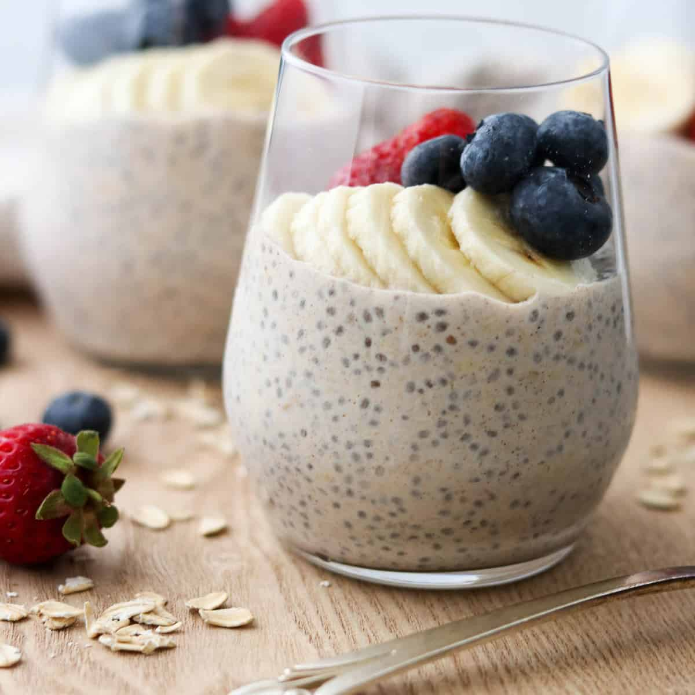

Overnight Oats

Description
My love for oats has grown over time. Initially non-existent in my diet, oatmeal is now a daily staple for me. A cold morning may call for a warm bowl of oatmeal, but 99% of the year i'm consuming them as overnight oats. The extended time, minimum 8 hours, oats spend with the ingredients lends to a more pudding-like texture that is achieved. Once they're pulled from the refridgerator, all that's missing is adding the toppings and flavor enhancers I preferre that day. Here is my favorite version.
Ingredients
- 1/2 C Oats
- 1/2 C Soy Milk
- 1 Tbsp Chia Seeds
- 1 Tbsp Agave Nectar
- 2-3 Chopped Strawberries
Steps
- Combine oats, chia seeds, and soy milk in mason jar or small container
- Cover container and place in refridgerator for minimum 8 hours
- Once taken out, add chopped strawberries and drizzle agave on top
- Enjoy!